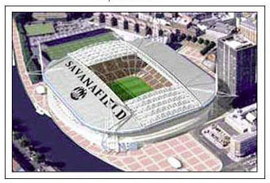
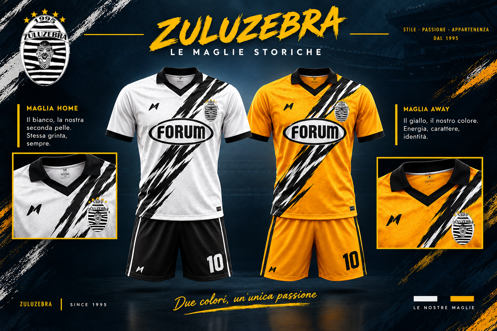

ZULUZEBRA

Anno di fondazione 1995
Quadri societari
Proprietà
Anelli Interior Design s.r.l.
Presidente Onorario
Naits Illena
Presidente
Chrix Anelli
Direttore Sportivo
Lucio Mogio
Allenatore
Gian Lu Vial
Preparatore
Giampi Sventro
Lo stadio

Terreno di gioco
Savanafield
Capienza: 95400
Le maglie

Le divise storiche della Zuluzebra
La storia della Zuluzebra
La sezione storica della società raccoglierà qui la storia della Zuluzebra, i suoi momenti più importanti e i materiali provenienti dall'archivio originale.
La pagina storica fornita documenta inoltre il percorso della società stagione dopo stagione e costituisce la base per la ricostruzione dell'archivio storico.
In questa versione non vengono aggiunte informazioni non presenti nelle fonti originali.
ARCHIVIO ZULUZEBRA
Fotografie e materiali storici
da inserire
da inserire
Le stagioni della Zulu
Il percorso storico della società nelle principali competizioni.
| Stagione | Serie Maxima | Apertura | Chiusura | Extra League | Lefabam Cup | Supercoppa |
|---|---|---|---|---|---|---|
| 1995/1996 | 2° | — | — | — | — | — |
| 1996/1997 | 1° | 1° | El | — | — | — |
| 1997/1998 | 1° | 1° | SF | — | — | — |
| 1998/1999 | 4° | SF | El | — | — | — |
| 1999/2000 | 1° | El | F | 1° | — | - |
| 2000/2001 | 2° | F | 1° | 2° | - | F |
| 2001/2002 | 2° | F | 1° | 1° | - | 1° |
| 2002/2003 | 2° | 8/vi | F | 2° | - | 1° |
| 2003/2004 | 5° | 1° | 8/vi | 8° | - | - |
| 2004/2005 | 5° | 8/vi | F | 7° | - | SF |
| 2005/2006 | 3° | 1° | 4/ti | 2° | - | - |
| 2006/2007 | 4° | SF | 8/vi | 1° | - | 1° |
| 2007/2008 | 1° | 4/ti | 1° | 2° | - | 1° |
Il Palmarès
🏆
4
Campionati di Serie Maxima
🏆
4
Tornei di Apertura
🏆
3
Tornei di Chiusura
🏆
3
Extra League
🏆
4
Supercoppe di Lega
—
0
Lefabam Cup